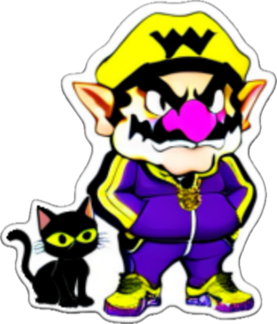
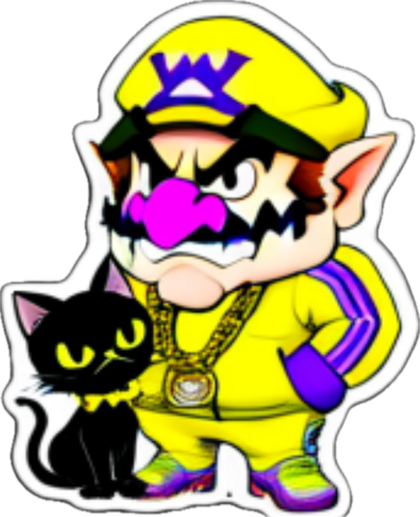

Welcome to Wario's Gato Corner! This is the feline from the game that you follow through out the course of the adventure.
Here is a link for info on the game! WL4

This gato is KF DOOM. He is named after the late great MF DOOM.
In this webpage I did the following: Changed the background, title font, added pictcures, youtube videos, hyperlink, background color was changed for text blocks, and I used an AI to generate the Wario with gatos.
 